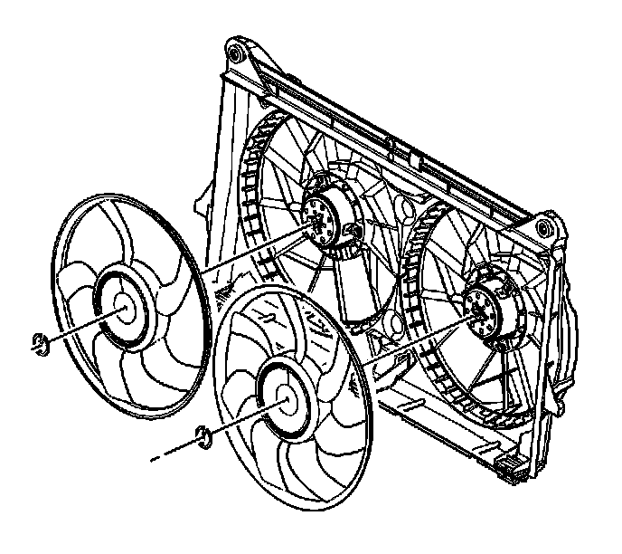

Engine Cooling Fan Replacement
Engine Cooling Fan Replacement
Removal Procedure

1. Remove the cooling fan and shroud.
2. Remove the cooling fan blade retainers.
3. Remove the cooling fan blades.
Installation Procedure
Important: The electric cooling fan assembly uses a 5-blade fan and a 7-blade fan. It does not matter which side the fan blades are installed on. DO NOT install two 5-blade assemblies or two 7-blade assemblies, as this would cause a noise issue.
1. Install the cooling fan blades.
2. Install the cooling fan blade retainers.
3. Install the cooling fan and shroud.